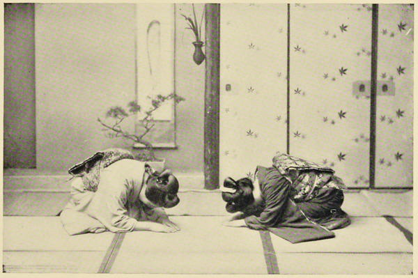

“Ceremony on the arrival and departure of a guest”
Japan: Described and Illustrated by the Japanese (1897)
Their salutation on meeting each other is very peculiar. They bow nearly to the ground, and on parting, place a hand on each of their own thighs, and as they bow slide it along until it reaches the knee, drawing a long deep inhalation all the time, and concluding by the familiar word “sionara.”
A Lady’s Visit to Manilla and Japan (1863)
A little English bow looked cold and ineffective indeed by those of the Japanese, and we tried hard daily to improve into the correct national style, bending nearly double in ordinary interviews, and falling on our faces on special occasions.
Japan As We Saw It (Bickersteth) (1893)
It was amusing to observe the jaunty air of those of the grown-up population, who were the happy possessors of any bit of European dress. They certainly considered it quite entitled them to a bowing acquaintance with us! However, they seem really to be a polite nation, and this even among the lower classes, who bow to each other in the most ceremonious and respectful manner. When one man approaches another, the two stop when some yards apart, make a sudden, jerky, very low bow, say a word or two, and then pass on with the same diving style of salutation.
Letters from China & Japan (1875)
Instead of the Japanese being the uncivilised barbarians that Englishmen are apt to imagine them, no people in the world are more polished in their manner, not only towards strangers, but each other. Even among the lower classes, two friends meeting in the street never approach until after bowing low two or three times in succession, while making that peculiar hissing noise that they use to convey a greeting. On parting, the same process is repeated, with the addition of compliments, good wishes, &c. Indeed, when two officials come into each other’s presence on a visit of ceremony, the interchange of mutual homage is almost ludicrous to watch. Advancing but a few paces at a time, at almost every step they bow their heads to the ground; their hands, with palms touching, following the movements of the body. In the same way, inferiors bend reverentially when coming into the presence of superiors, awaiting their permission to rise.
Our Life in Japan (1869)
The common mode of salutation is to bend nearly double and remain so for some time in conversation, giving a bob down for every compliment; which, as politeness is one of the greatest of Japanese virtues, occurs very frequently. The visit or rencontre ends in the same way as it begins; and it is a most amusing sight to see two old women bobbing thus, and chattering for half an hour before either one or the other will give in. The men generally salute one another in the same manner, but they pass the hands down the knee and leg, and give a strong inhalation of pleasure while performing these gymnastics. The difference may be seen at once between inferiors saluting their superiors and equals saluting equals: in the latter case the ceremony is a long one; in the former a low bend from the inferior till the fingers touch the ground, a curt yet affable bend from the superior. But there are a great many nice distinctions observed in the etiquette of salutation according to rank, which could only be made intelligible to the stranger by the lectures and demonstrations of a professor.
Japan, the Amoor, and the Pacific (1861)
It is a pretty sight to witness the courtesies and etiquette, when one of these demure young ladies calls upon another. Standing at the doorway she drops three or four funny little curtseys, and then steps daintily up the wooden barrier to the raised floor where her friend meets her. Then a formal conversation begins in this fashion: — Visitor, “I am afraid I inconvenienced you very much the other day;” Hostess, “Not at all, your presence was most welcome;” Visitor, “But I ought not to have stayed so long, and partaken of tea;” Hostess, “I assure you. I was delighted to see you.” After these formalities are over, which Japanese etiquette demands, they both sit down on the bamboo mats round the charcoal hibacho and partake of straw-colored tea and long red and green cakes, indulging in the same harmless scandal that ladies are so partial to all the world over.
Impressions of a Journey Round the World (1897)
We had hardly arrived [in the village of Odaszu, Yesso] when an officer appeared, announcing that the magistrate of the district would soon wait upon us. He came immediately with all his retinue, and entered our apartments with two or three officers. In our interviews with those officials who had been in the habit of meeting foreigners, we had always adopted the usual compromise between foreign and Japanese etiquette; but we now were to receive an officer who knew nothing of this compromise, and to whom a shake of the hand would have seemed as ridiculous a proceeding as the salutation by rubbing noses seems to a European newly arrived among the natives of the South Sea islands. There was no escaping it; it was clear we would have to conform to the complicated Japanese ceremonial. Accordingly we ranged ourselves and the officers of our escort in a row, squatting upon our marrow bones, while our visitor and his attendants faced us in another row, exactly five feet distant. This done, using our knees as pivots, every man threw his body forward, with the palms of his hands resting on the mat, and regarding his vis-a-vis for an instant, lowered the head till the forehead rested on the floor. In this position each side murmured in a low tone the customary formula, and then raised the head just far enough to see that the other side was being equally polite. Another lowering of the head, and another formula, and the ceremony was ended. Returning again to the usual sitting position, not without a strong tendency to vertigo, on my part at least, we began an informal conversation, assisted by the fragrant tea and tobacco of Japan. Our visitor soon left us to rest from the fatiguing journey of the day.
Across America and Asia (1870)
On the train [from Yokohama to Tokyo] I met Mr. Robertson, of Van Tine & Co., the New York importers of Chinese and Japanese goods, and Dr. Eldridge, of Yokohama. ... Dr. Eldridge has been in Japan about seventeen years, having at first been in the employ of the Government. He is now practising medicine at Yokohama, and also delivers lectures on Medical Jurisprudence at the Tokio Law School. When I spoke to him of the politeness of the Japanese, he remarked that it is much less elaborate than in former years, and added that, with many of the people, the old-time Japanese politeness has disappeared, while nothing has been adopted as a substitute for it.
Jottings of Travel in China and Japan (1888)
◀ Attitudes toward foreignersClothing ▶